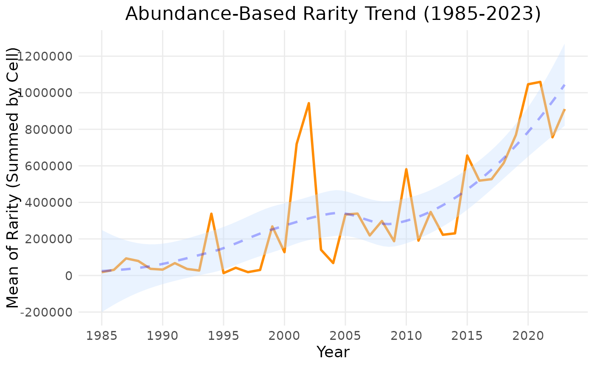

This function calculates abundance-based rarity over time.
Arguments
- data
A data cube object (class 'processed_cube').
- ...
Arguments passed on to
compute_indicator_workflowcell_sizeLength of grid cell sides, in km. (Default: 10 for country, 100 for continent or world)
levelSpatial level: 'continent', 'country', or 'world'. (Default: 'continent')
regionThe region of interest (e.g., "Europe"). (Default: "Europe")
output_crsThe CRS you want for your calculated indicator. (Leave blank to let the function choose a default based on grid reference system)
first_yearExclude data before this year. (Uses all data in the cube by default.)
last_yearExclude data after this year. (Uses all data in the cube by default.)
spherical_geometryIf set to FALSE, will temporarily disable spherical geometry while the function runs. Should only be used to solve specific issues. (Default is TRUE)
make_validCalls st_make_valid() from the sf package. Increases processing time but may help if you are getting polygon errors. (Default is FALSE).
Value
An S3 object with the classes 'indicator_ts' and 'ab_rarity' containing the calculated indicator values and metadata.
Examples
abr_ts <- ab_rarity_ts(example_cube_1, first_year = 1985)
plot(abr_ts)
